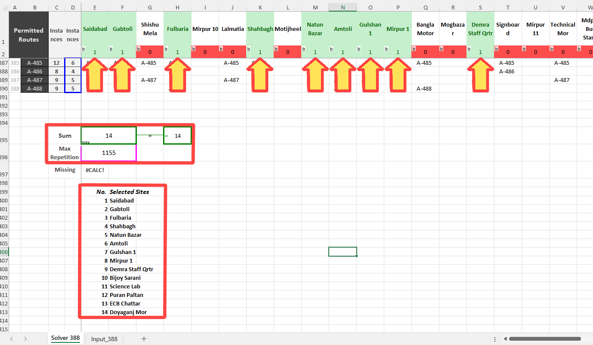

Background
I was part of a government project related to Dhaka’s Public Transit. Our project had plans to conduct broadscale boarding alighting surveys. So, I intended to do some preparatory survey planning. However, the budget and the time frame could not be estimated due to the lack of information. The number of surveyors, survey frequency, time frame, and budget were all reliant on one key information, the number of operational Bus Routes. I devised this survey to gather information on the bus lines in the most time and cost-effective way.
Objective of the Survey
The number of operational Routes and Bus Services that are operational in Dhaka is unknown. This survey was designed to investigate and create a complete database of all active bus services in Dhaka.
Core concept
The concept of this survey is simple. It can be broken down into two parts, the investigation survey itself and the optimization employed for site selection. The optimization is done to select the minimum number of survey sites that give the maximum amount of information.
Route Investigation: Different spots will be surveyed individually and every single operating bus service seen there will be recorded. That data will then be compiled, which will give us a list of active bus operators. Surveyors will also take ample pictures of the buses, which will provide additional information. Optimization: Selecting arbitrary sites and hoping to cover every possible route is neither optimal nor time efficient. This is where the optimization comes into play. By applying a Set Covering method, a minimum number of survey points can be selected that provides maximum coverage. Excel's Solver can be used for this process. I'll be using a third party extension called Open Solver because the amount of data I'm working with exceeds Excel's limit of 200 variables.
Optimization: Selecting arbitrary sites and hoping to cover every possible route is neither optimal nor time efficient. This is where the optimization comes into play. By applying a Set Covering method, a minimum number of survey points can be selected that provides maximum coverage. Excel's Solver can be used for this process. I'll be using a third party extension called Open Solver because the amount of data I'm working with exceeds Excel's limit of 200 variables.
Site Selection Process
According to governmental data (BRTA – Bangladesh Road Transport Authority), a total of 388 routes have been permitted in Dhaka up until 2024. This list supposedly includes every single bus route that has ever existed. With this assumption in mind, we want to select the minimum number of locations that cover all of these routes. Now if we survey those, we are bound to get a complete picture on bus activity.
First Selection
For the First Selection some junctiones can be roughly selected throughout the entire city. But it is absolutely necessary that these points cover each route at least once. They should also be well scattered throughout the city. Other factors like ease of surveying, safety and surveyor preference should also be considered.
GIS aided in this selection process. I had collected shapefiles for all 388 permitted bus routes. These are not accurate, but they provide enough data for our purpose. From GIS the names and numbers of routes running along a given location can be found.


With the extracted data I created a spreadsheet by arranging the spots and routes in a corresponding manner (see the figure below). This arrangement made it possible to run the optimization (Set Covering method) via OpenSolver. To keep things simple, I have not explained how the method works. But I have provided a detailed explanation about the method in a small demo here.

In my case I selected 32 individual spots as my first selection. Every one of the 388 permitted routes had run along these 32 sites at least once. I also added another condition on the solver that made sure the combination of locations with the maximum amount of repetition was selected.
Final Selection (Solving for Minimum Number of Locations)
The optimization selected 14 spots out of the 32 as the final choice. It also made sure that this combination of locations had the maximum number of repetitions. (The chosen locations can be seen with green highlights. Note that the cells are also populated with 1’s or 0’s, indicating selection or rejection.)
All there is to do now is conduct the Route Investigation survey and collate data. The compilation of all the names and numbers of routes should be the actual number of active bus services in Dhaka. The pictures taken during the survey will provide additional information such as the names of services and route alignment.
Ending Note
This survey is meant to be conducted in a very short time span as a preparatory survey. The manpower needed is also very small, and individual sites only need to be surveyed for at most 2 hours. I recommend conducting this before commencing any broadscale surveys.